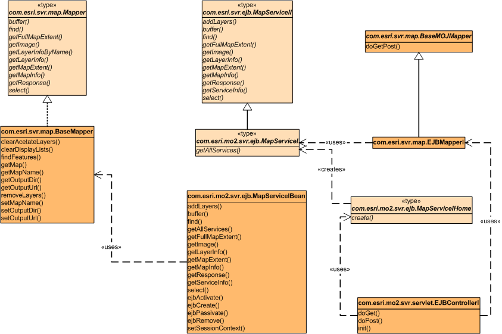
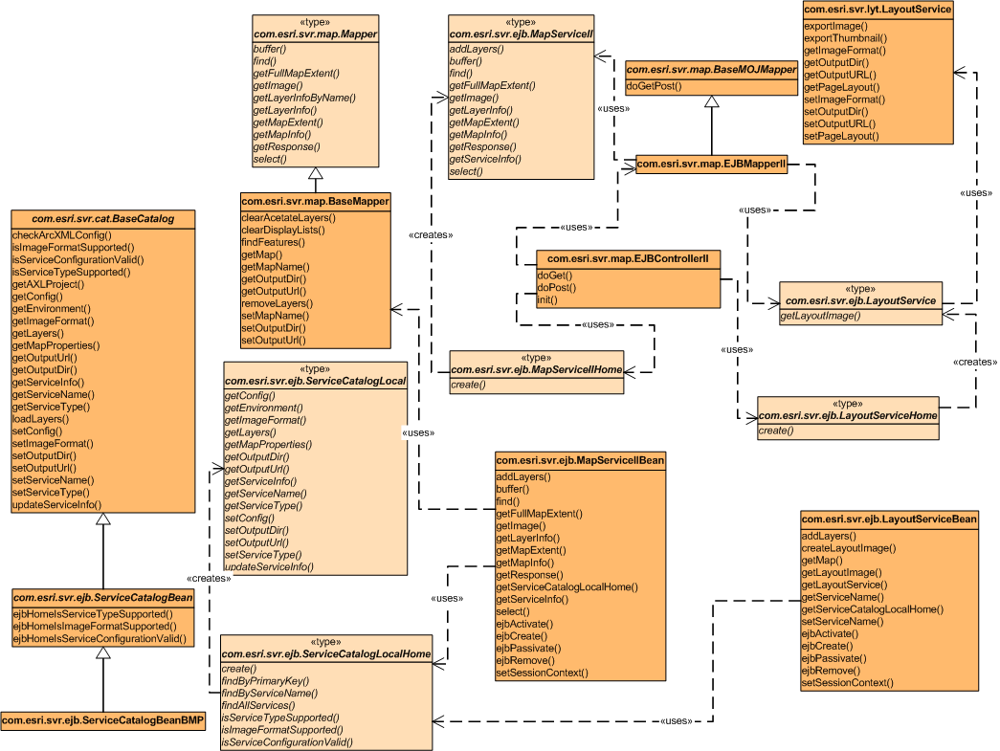

Contains two EJB samples: SimpleEJB and AdvancedEJB. This package contains
two EJB samples but consists of five EJBs: SimpleEJB (MapServiceI, MapServiceIHome,
and MapServiceIBean); AdvancedEJB (MapServiceII, MapServiceIIHome,
and MapServiceIIBean); LayoutServiceEJB (LayoutService, LayoutServiceHome,
and LayoutServiceBean); CatalogEJB (Catalog, CatalogHome, and CatalogBean);
and a local entity bean, ServiceCatalog (ServiceCatalogLocal, ServiceCatalogLocalHome,
and ServiceCatalogBean/ServiceCatalogBeanBMP).
Class Diagram of the Package Interfaces and Classes
SimpleEJB Sample

AdvancedEJB Sample, LayoutService, and ServiceCatalog EJBs

Catalog EJBs (in the middle)

Click the diagrams to see printer friendly versions.